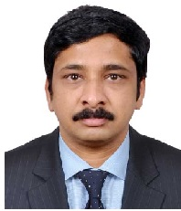

My Resume
Mukundan Ayanikkat Subramonian

Summary
To obtain the position in Medical field, in a reputed organization, where I can use my
acquired experience and abilities to benefit the organization.
Education
- Diploma in Advanced Software Technology (1998 - 2000) from CMC Ltd, (A Tata Enterprise)
- Bachelor of Information Technology (2000 - 2002) from Manipal Academy of Higher Education
Skills
-
Sixteen years of experience as a Medical Transcriptionist and six years of experience
as a Medical Representative.
Experience
- Medical Transcriptionist / Medical Secretary
- Burjeel Hospital, Abu Dhabi, UAE from June 2014 – June 2022
- Home-based Medical Transcriptionists (2000 to 2008)
- Extensive knowledge of complex medical terms and procedures
- Preparing Medical Reports and Operative Reports in SAP.
- Medical Representative
- Galpha Laboratories Ltd, India (Field Officer) - Oct 2013 to March 2014
- Svizera HealthCare (Pvt) Ltd., India (Business Development Executive) - May 2012 to Sep 2013
- Merck Ltd, India - Territory Business Representative - March 2008 to April 2012
-
- Experience in selling medical products
- Skilled in developing trust and build good rapport with customers Maintaining knowledge of new
developments in Health Services.
- Developing strategies for increasing the business.
- Good convincing and negotiation skills
- Managing budgets.
Contact
Contact No: +91-9497691205
Address: Trivandrum, Kerala, India
Email ID: mukundanakt@gmail.com